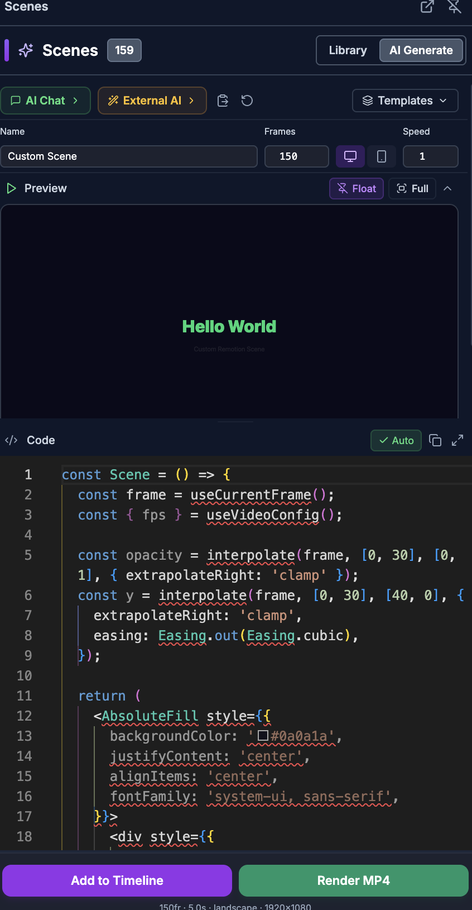
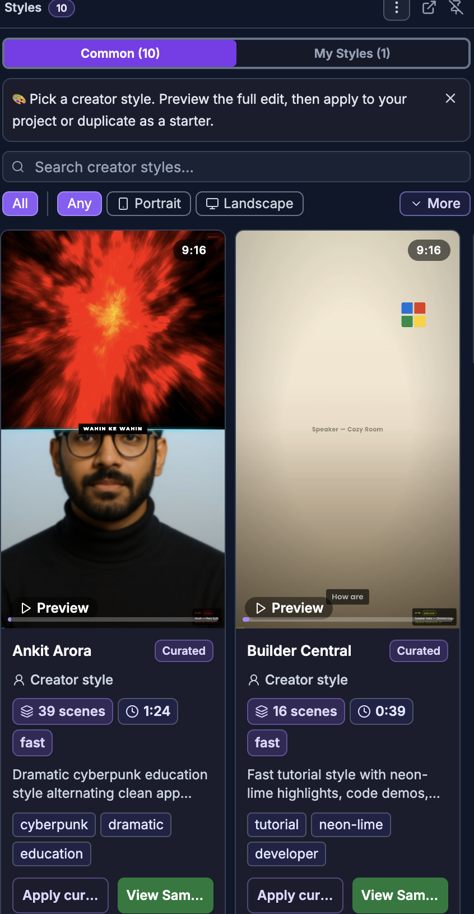

For humans — and for AI helping humans. This document describes how a person edits video by hand using the on-screen controls of the SkillTown video editor. It is not an AI skill or an automation API, so if you are an AI agent, do not treat these steps as callable commands — for programmatic/automated editing use the agent skills and commands documented elsewhere (see
_Agent/AGENTS.md). You may, however, read this doc to answer a user's "how do I…" questions and walk them, step by step, through performing these actions themselves in the editor UI.Use pre-built animated scenes, apply complete creator-style sequences, combine multiple items into one editable scene, and save your own edits as reusable styles.
Where to find it¶
- Open the Scenes tab in the menu panel to browse animated scene templates.
- Open the Styles tab in the menu panel to browse full-video creator styles.
- Select items on the canvas or timeline, then right-click and open Arrange to combine items into a nested scene.
- Select a scene or nested scene to edit it in the properties panel.
What you can do¶
- Browse the scene Library by category, search, favorites, recents, duration, and live previews.
- Add a pre-built animated scene to the timeline at the current playhead.
- Preview a full creator style, inspect its Look profile, Templates, Chapters, and Scene catalog, then apply it to your current project.
- Filter styles by Common, My Styles, Any, Portrait, Landscape, tags, and search.
- Combine selected items into a Nested Scene so they move and animate as one item while still exposing editable layers.
- Save your current edit as a style in My Styles for reuse later.
How to understand scenes, templates, and styles¶
- Use Scenes when you want one animated building block, such as a chart, motion background, opener, closer, text animation, or comparison scene.
- Use Styles when you want a full creator-style sequence. A style can add multiple scenes at once and preserve a recognizable pacing, color, layout, and typography direction.
- Use a Nested Scene when you want several selected items to become one grouped scene. The group appears as one item on the timeline, but its internal layers remain editable from the properties panel.
How to browse and preview the scene library¶

- Click Scenes in the menu panel.
- Make sure the Library tab is selected.
- Use Search scenes... to find a scene by name, description, category, tag, or best use.
- Filter with category chips such as All, Charts, Motion BG, Layout, Text, Data Viz, Effects, Compare, Speaker, Closers, and Openers.
- If available, use Favs for saved favorites and Recent for recently used scenes.
- Click the sort control to cycle through A→Z, Z→A, Short, and Long.
- Click a scene card or Preview to expand it.
- In the preview player, use Play, Pause, the seek bar, Open in fullscreen preview, or Browser fullscreen (or double-click video).
- Use Preview all to show previews for all visible scenes, then Collapse to close them.
How to add a template scene¶
- Move the playhead to where you want the scene to begin.
- Open Scenes > Library.
- Find the scene you want.
- Click Add on the scene card, or expand the card and click Add to Timeline.
- The scene is inserted on the timeline at the playhead.
- Select the new scene to edit its settings in the properties panel.
You can also use Add to Timeline from the fullscreen preview.
How to apply a full style¶

- Click Styles in the menu panel.
- Choose Common for curated creator styles, or My Styles for styles you saved.
- Use Search creator styles... or Search your styles....
- Filter with All, Any, Portrait, Landscape, tag chips, More, and Less.
- Click a style card to open its preview.
- In the preview dialog: - Click View Sample Edit → to open the complete sample edit in a new tab. - Review Look profile for pacing, density, energy, mood, colors, and fonts. - Review Templates and click Apply full sequence for the sequence you want. - Use the video controls: Play, Pause, Mute, Unmute, the seek bar, and Playback speed. - Use Chapters or Scene catalog to jump through the sample.
- Confirm the dialog titled Apply {style name}? by clicking Apply.
The style is added starting at the current playhead. Existing items are not removed.
How to apply a style directly from a card¶
- Open Styles.
- Find the style card you want.
- Click Apply current.
- In Apply {style name}?, review how many scenes and how much duration will be added.
- Click Apply.
After the style is applied, the editor shows a success message with Undo if you want to reverse the insertion.
How to group items into a nested scene¶
- Select two or more items on the canvas or timeline.
- Right-click one of the selected items.
- Open Arrange.
- Click Combine {number} items.
- The selected items become one combined item named like Nested Scene ({number} layers).
The original items are replaced by the nested scene. The nested scene keeps the combined timing and layer order.
How to edit inside a nested scene¶
- Select the nested scene.
- In the properties panel, find Nested Scene ({number} layers).
- Use Select All to select every layer, or click individual layer checkboxes.
- Expand a layer with the chevron.
- Choose Quick Edit for fast controls:
| Control | What it changes |
|---|---|
| Position & Size | Layer position and dimensions. |
| Opacity | Layer transparency. |
| Round | Corner rounding. |
| Vol | Video layer volume. |
| Speed | Video layer playback speed. |
| Blur | Layer blur amount. |
| Bright | Layer brightness. |
- Choose Full Settings to edit that layer with its full item controls.
- Use the eye button to show or hide a layer, arrow buttons to reorder layers, and the trash button to remove a layer.
- When multiple layers are selected, use Editing {number} layers, Opacity (all), Show, and Hide for batch changes.
- Use group-level Animations, Keyframes, and Effects to animate or style the nested scene as one item.
- Click Uncombine in the properties panel, or right-click the item and choose Arrange > Uncombine layers, to restore the original items.
How to save your work as a reusable style¶
- Open Styles.
- Open the panel’s More style actions menu.
- Click Save current video edit as style.
You can also open My Styles and click Save current edit / as a new style, or the empty-state button Save your current content as a style.
- In Save as Style, fill in:
| Field | What to enter |
|---|---|
| Name | A required style name. The placeholder is My cinematic look. |
| Tags | Optional labels. Type a tag and press Enter, Tab, or comma. |
| Description | Optional notes. The placeholder is What makes this style distinctive? |
| Visibility | Choose Private (Only you) or Public (Anyone). |
| Auto-generate semantic layer | Keep this on if you want the editor to describe the style automatically so future AI edits stay on-brand. |
- Click Save Style.
- After saving, the editor switches to My Styles.
If you see This content has no recent render. click Render your content first, render the project, then try saving the style again.
Tips & good to know¶
- Scene templates and full styles are added at the current playhead, so position the playhead first.
- Applying a style adds new scenes; it does not clear your timeline.
- Use View Sample when you want to study a style before applying it.
- Use Combine {number} items when you want one movable, animatable group. Use Link {number} items only when you want items to stay separate but move/delete together.
- A nested scene cannot remove its last layer.
- When resizing items on the canvas, hold Shift to lock aspect ratio. If crop controls are active, the canvas shows Crop Mode.
- If a style is no longer useful, open My Styles, use Style actions, then choose Delete.